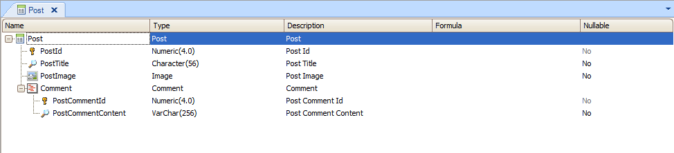
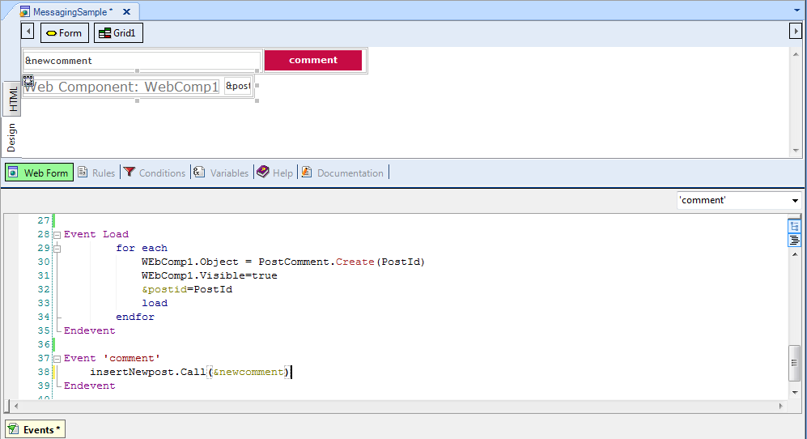
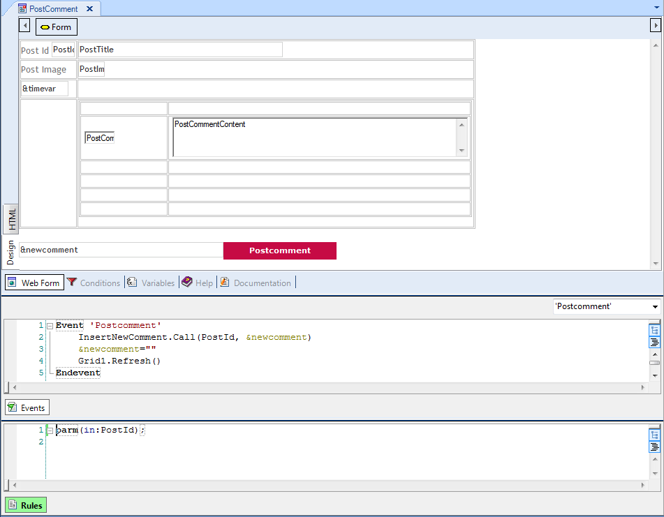

Using GeneXus Tilo's web features you can implement a web page which shows user comments on a given topic, and gives the user the possibility to add new comments as they are updated in real time, very similar to the Facebook wall.
When a user adds a new comment to a post (or adds a post to the "wall"), the following needs to be fulfilled:
- Other users who are in the same page receive the new comment in their screens without the need to do a refresh of the web page.
- If any other user is also editing a new comment he will receive the comment of the first user without losing what he is typing.
To achieve the above, the following is needed:
- Use Server.Socket external object so the notification is sent to the clients without the need for making a request to the server.
- Configure Web User Experience property to "Smooth" so each time you execute a User defined event the refresh will be local to the object and a full page refresh will not take place.
- Technically, we need to be able to make a refresh of a single grid line. In this case we leverage the advantages of Event execution on the client side in X Evolution 3 and Load Command and Load Method in User Events.
This can be achieved with the design and sample code explained below.
We have the following structure (very simplified):

Figure 1.
The web panel which displays the forum messages is named "MessagingSample", and it includes:
- A &newComment string variable and a "Comment" button to add a new post.
- A free style grid which loads a web component named "PostComment". The free style grid also includes a variable &PostId where the post identifier of the line is persisted.

Figure 2.
As shown in the figure, the code to load the free style grid is as follows:
Event Load
for each //loop through the "post" table and load the post and its comments in a web component
WEbComp1.Object = PostComment.Create(PostId)
WEbComp1.Visible=true
&postid=PostId //&PostId is a variable included in the free style
load
endfor
Endevent
The "Comment" button is associated to the "Comment" event whose code is as follows:
Event 'comment'
InsertNewpost.Call(&newcomment)
Endevent
The insertNewpost procedure will be explained below in this page.
The 'PostComment' web component has a free style grid which loads the posts and its comments.

Figure 3.
The "PostComment" button is associated to the 'Postcomment' event where the user can add a new comment to this post.
Code of PostComment event:
Event 'Postcomment'
InsertNewComment.Call(PostId, &newcomment)
&newcomment=""
Grid1.Refresh()
Endevent
Note the Grid1.Refresh() command inside the 'PostComment' event. The idea is to make a grid refresh after having added a new comment and not a refresh of the whole page and its container. This is achieved because Web User Experience property is set to "Smooth".
The 'InsertNewComment' procedure inserts the comment in the database, and afterwards it should call a procedure that sends a notification. The procedure call can be as follows, passing the &PostId as parameter:
call(NewCommentNotification, &PostId)
The procedure NewCommentNotification should send a broadcast notification using Server.Socket external object. Its code is as follows:
parm(in:&PostId);
&NotificationInfo.Id=&PostId.ToString() //&NotificationInfo is NotificationInfo data type. Store the PostId in the NotificationInfo Id field.
&NotificationInfo.Message='Comment'
&webnotification.Broadcast(&NotificationInfo)
When this code is executed, it automatically triggers a notification to all the clients, using Web Sockets.
In particular, the InsertNewpost procedure used above is similar to InsertNewComment. It inserts a new post in the database and calls a procedure that sends a notification of a new post. The procedure that sends the notification of a new post could be similar to the following:
&NotificationInfo.Id=&PostId.ToString() //&NotificationInfo is NotificationInfo data type. Store the PostId in the NotificationInfo Id field.
&NotificationInfo.Message='Post'
&webnotification.Broadcast(&NotificationInfo)
If the client web panel has the OnMessage event programmed, the notification is captured and an action can be executed as a result.
In our example, we need to automatically refresh the grid line each time a new comment arrives.
So in the "MessagingSample" panel we program:
Event OnMessage(&NotificationInfo)
if &NotificationInfo.Message = "Comment"
for each line
if (&NotificationInfo.Id=&postid.ToString())
WebComp1.refresh()
endif
endfor
else
&postid = ¬ificationInfo.Id.Trim().ToNumeric()
webcomp1.Object = PostComment.Create(&PostId)
load
endif
Endevent
Remember that the &postId variable is on the form, in the grid line.
Note that we execute the WebComp1.refresh() event only for the line of the grid which loads the post corresponding to the PostId of the Notification which has arrived. Only this line is refreshed so the user does not lose any editing he may have been doing when the notification arrived. The For Each line command is executed client-side for a successful result; see Event execution on the client side in X Evolution 3.
The load event adds a new line without refreshing the grid, as explained in Load Command and Load Method in User Events.
Download sample here.
Web Notifications and Progress UC requirements
|